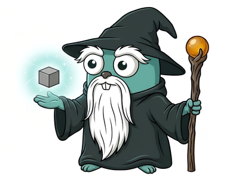

magus

A fast cross-platform task orchestrator for polyglot (mono)repos.
Magus computes affected projects from your changes, caches the results, and runs the minimum rebuild set after a change.
Single binary. Code as configuration. Statically typed. No second toolchain.
Philosophy
A build system sits in the hot path of development. You touch it constantly, so every small friction compounds; it earns its keep by staying out of the way.
So magus does not try to define what "build", "test", or "lint" mean for your tools. That is the job of spells: libraries of tool-native operations. The go spell exposes build/test/vet/fmt/lint, the rust spell build/test/clippy/fmt, and your magusfile composes them into the targets you actually run. magus handles the orchestration around them: it computes the affected projects from a change, caches their results, and runs only the minimum (see Spells).
And it keeps that machinery transparent. The cache, the daemon socket, and the run log are all just files on disk; inspect them with ls and cat.
Install
magus is a single self-contained binary. Download a build from the releases page and move it onto your PATH, or build from source. See the installation guide for the details.
Shell setup
Shorthand: mgs
The de facto shorthand for magus is mgs: three left-hand keys, fast to type, and collision-free. Either alias it in your shell:
alias mgs=magus
or create a symlink:
ln -s "$(command -v magus)" ~/.local/bin/mgs
Tab completion
Magus ships completion scripts for bash, zsh, and fish:
magus completion bash >> ~/.bashrc
magus completion zsh >> ~/.zshrc
magus completion fish >> ~/.config/fish/config.fish
Quick start
1. Initialize the workspace
From the root of your repo:
magus init
Writes magus.yaml, stubs magusfile.buzz, and wires the VCS merge driver. Config goes to $XDG_CONFIG_HOME/magus/magus.yaml by default; --local writes it into the repo instead.
2. Edit the magusfile
magus init drops a starter magusfile.buzz registering your project and wiring CI flow. Targets are declared as exported functions, with no registration call needed:
// magusfile.buzz (generated by `magus init`)
import "magus";
import "spells/hello"; // ./spells/hello/spell.buzz
magus.project({
"spells": [hello],
});
// Each exported function becomes a runnable target.
// 'ci' is the canonical entry point for `magus affected ci`.
export fun preflight(args: [str]) > void {}
export fun generate(args: [str]) > void {}
export fun format(args: [str]) > void {}
export fun lint(args: [str]) > void {}
export fun build(args: [str]) > void { hello.build(); }
export fun test(args: [str]) > void {}
3. Verify
magus ls # lists the registered project
magus run build # delegates to hello's build target
magus run ci # runs the ci target you composed, read-only
CI
ci is an ordinary magusfile target; magus does not hardcode its steps. Export a ci function, wire the flow with magus.needs, and magus runs it read-only.
export fun ci(args: [str]) > void {
// declare the edges you want; independent steps run in parallel
magus.needs(
magus.target.literal("preflight"),
magus.target.literal("generate"),
magus.target.literal("format"),
magus.target.literal("lint"),
magus.target.literal("build"),
magus.target.literal("test"),
);
}
Recommendations
We document this order; we don't enforce it. Chain steps with magus.needs where order matters (e.g. test depends on build).
flowchart TD
cmd["magus affected ci"] --> preflight
subgraph targets["Targets (composed in your magusfile)"]
preflight --> generate
generate --> format
format --> lint
lint --> build
build --> test
end
Shared cache trust
Who may write the cache is a trust boundary. The primary defense is Ed25519 signing: a consumer replays a remote artifact only if it carries a signature from a key in cache.remote.trusted_keys. Wiring a remote backend without a trust set is refused.
# magus.yaml - bind the backend in magusfile.buzz via magus.cache.remote(github)
cache:
remote:
trusted_keys:
- "<base64 Ed25519 public key>" # magus config cache key generate
A complementary defense is to open the cache read-only on untrusted refs: replay hits but never publish. Gate it on the event so only trusted pushes write, and apply the same rule to any persisted run history (the forecaster and flake detector read it): restore always, save only from trusted pushes.
# PRs replay the cache and see main's history, but write neither
MAGUS_CACHE_IMMUTABLE: ${{ github.event_name == 'pull_request' }}
To set up a shared cache (GitHub Actions Cache, S3/MinIO/R2/B2, or your own backend) and generate signing keys, see Remote caching.
Concepts
The magus model comes down to five terms: a workspace holds projects; in each project you run targets, which compose the operations that spells provide; charms modify how a run behaves.
Workspaces
magus scopes to the current working directory by default.
magus run build # current project
magus run build api # explicit project (workspace-relative)
magus run build ../web # relative to cwd: from web/studio this targets web/web
magus run build . # the project containing the cwd
magus run build / # entire workspace
Bare paths (api, web/studio) are always workspace-relative; dot-relative
paths (./x, ../x) resolve against the current directory. Absolute paths and
paths that escape the workspace root are rejected, so magus never operates
outside the workspace it discovered. See docs/targets.md
for the full rules, including how symlinks are treated.
Scoping is descend-only: every spell runs with cwd = project.Dir and can only
reach files below it. Sibling projects are structurally invisible: a formatter on
api cannot touch web regardless of its glob pattern. If a spell walks into a
registered descendant project's directory, magus catches it at runtime
(write-mode targets only) and emits diagnostic code MGS3001. See
docs/codes/sandbox/MGS3001.md.
Projects
A project is a directory magus treats as a unit of work, with its own targets,
cache entries, and scope. magus infers dependencies between projects automatically
from language manifests: go.mod require directives, Cargo.toml path = "..."
entries, and package.json workspace:* entries. You only need to declare
dependencies explicitly when magus can't see the edge, typically cross-language
relationships or codegen producers.
magus.project("apps/ui", {
"spell": { "name": "typescript" },
"depends_on": ["api", "internal/schema"],
});
Paths can be repo-relative ("api") or relative to the declaring project ("../api").
Declared dependencies affect magus affected: when api changes, apps/ui is included in the affected set and rebuilt downstream. They also appear in magus describe output and graph views.
Targets
A target is what you run (magus run lint): a named operation declared as an
exported function in your magusfile.buzz. Targets compose the operations spells
provide; you bind spells and invoke targets. See also Target Anatomy and Spells vs Targets.
The full form of a run target is:
magus run [<spell>::]<target-or-op>[:<charm>,...] [project...] [-- <extra args>]
The project is always a positional argument; the : after a target introduces
charms, not a project path.
Basic
magus run build # build the cwd project (or all if not inside one)
magus run test api # test the 'api' project specifically
magus run lint / # lint every project in the workspace
Spell-qualified (::)
spell::op invokes a single spell's op directly, bypassing your composed targets. It is an escape hatch for ad-hoc runs and introspection. The token after :: is a spell op (its CLI-command name), not a lifecycle target:
magus run typescript::eslint api # the eslint op of the typescript spell on 'api'
magus run go::go-test / # the go-test op of the go spell across all projects
The spell name matches one of the built-in identifiers (go, typescript, python, rust, etc.); op names are matched verbatim, so go::go-vet runs while go::lint is a graceful no-op (the go spell's linter op is golangci-lint). See Naming operations.
:: works with affected too:
magus affected typescript::eslint
Charms (:) are named execution modifiers appended after the target, like :rw to let a read-only target write. See Charms for the full definition and how they stack.
Spells
A spell is how a tool does something (the go-vet op): a library of
tool-native operations. The go spell exposes build/test/vet/fmt/lint,
the rust spell build/test/clippy/fmt. Binding a spell to a project
contributes its inputs and outputs to the cache key and affected set but runs
nothing on its own; you wire its ops to lifecycle targets in your magusfile. See
Spell Anatomy.
Charms
A charm is a shared, named execution modifier, an intent like rw that each
target interprets in its own way (format rewrites files, generate writes
outputs). Reuse charms across targets rather than defining them per-target.
Append a comma-separated list after the target with :; names use
the target charset ([A-Za-z0-9_-]).
rw is the built-in read→write charm, activated like any other with a :rw suffix:
magus run format:rw api # the rw charm on format, in project api
Charms stack: pass several and they all apply (order- and duplicate-insensitive), so orthogonal intents compose:
magus run lint:rw,debug # autofix + verbose, together
The default (no rw) is read-only, and CI always runs read-only. A workspace can
flip its local baseline with default_charms: [rw] in magus.yaml (applied to
magus run/x, not affected; --no-default-charms opts out per run). Spells
read charms from context via HasCharm, so workspaces can introduce their own
shared charms. See docs/charms.md.
Tips & Tricks
Non-obvious ways to combine magus subcommands.
Live pool snapshot in a multiplexer sidebar
magus status is a non-blocking, one-shot RPC snapshot: it returns immediately whether the daemon is running or not. Combine --compact (a single densely-packed line) with --watch to keep a tmux/screen sidebar pane current:
magus status --compact --watch=1s
Sample output:
daemon 3/8 busy · api:build(2.1s) · ui:test(0.5s) · 1 ws
When no daemon is running the line reads daemon: off, with no error and no hang. Drop --compact for the full grid view when you have a wider pane to spare.
Step through a target to diagnose a flaky build
magus run --step pauses before every subprocess and lets you inspect state, skip commands, or open a REPL mid-run. Concurrency is forced to 1, so commands execute one at a time:
magus run build --step
magus affected build --step
See --step for the full prompt reference.
Re-run only affected projects on each save
Pipe magus watch into magus affected --stdin for a tight inner loop that re-runs only the projects touched by each edit:
magus watch | while IFS= read -r path; do
echo "$path" | magus affected --stdin test
done
One-shot daemon health probe
magus status exits 0 even when the daemon is down (the pool block reads daemon: off). Use it as a cheap, non-blocking reachability probe in scripts or CI health checks, with no risk of hanging on a network timeout:
magus status
magus status -o json # machine-readable output
Debugging
Two entry points into an interactive Buzz REPL, sharing one evaluator:
magus repl: standalone shell with magusfile bindings preloaded.magus.pry():binding.pry-style breakpoint that opens the same REPL mid-target with frame context (.where,.locals,.up/.down,.step, ...).
export fun build(args: [str]) > void {
os.exec("go", ["generate", "./..."]);
magus.pry(); // execution pauses here; inspect or modify state
os.exec("go", ["build", "./..."]);
}
magus run build --step pauses before every subprocess instead (concurrency forced to 1) so you can step, skip, or drop into a REPL command-by-command.
Full reference (meta-commands, pry stack navigation, --step keymap, multiline behavior) is in docs/debugging.md.
Recursion
Targets can call magus recursively. Child invocations forward work to the parent process over a local socket; concurrency limits are shared, so nested calls draw from the same budget instead of each grabbing their own slots.
magus.cmd(["run", "build", "api"]);
magus.cmd is the in-magusfile entry point for invoking magus recursively. When a daemon is running, the call rides the existing socket connection instead of spawning a new process.
CLI
The magus command-line surface: the command reference, how arguments are forwarded to a target, and how output is formatted. The run grammar itself (spell::op, charms, project selectors) lives under Targets.
Commands
| Command | Purpose |
|---|---|
ls |
List discovered projects |
where |
Print the absolute path of a project (fuzzy match) |
describe |
Explain why a project is in the affected set |
run |
Run a target for selected projects |
x |
Interactive picker: choose project + target (TTY only) |
affected |
Run a target against VCS-affected projects; --stdin reads paths from stdin, --plan emits a CI shard plan, --bisect finds a regression's culprit commit |
watch |
Emit changed paths to stdout |
tail |
Stream the most recent cached log for the cwd project |
status |
Show telemetry, cache settings, and the live concurrency pool |
doctor |
Validate the workspace |
config |
View or update configuration (init, view, set, history, cache) |
server |
Manage the persistent daemon (start, stop, status) |
repl |
Interactive Buzz REPL with the magusfile bindings preloaded |
completion |
Print a shell completion script (bash, zsh, fish) |
self update |
Update magus to the latest release (replaces running binary) |
version |
Print version, commit, and build date |
x: interactive picker
magus x is a TTY shorthand for magus run. It presents a fuzzy project picker followed by a target picker, then executes the selection.
magus x # browse all projects
magus x api # pre-filter to projects matching 'api'
magus x web ui # AND-filter: projects matching both 'web' and 'ui'
The target list is: build, test, lint, format, clean, generate, ci.
x remembers the last target used per project and pre-highlights it on the next run.
magus x refuses to run outside an interactive terminal. To override (e.g. in a wrapper script), set assume_interactive: true in magus.yaml or MAGUS_ASSUME_INTERACTIVE=1.
repl: interactive shell
magus repl opens an interactive Buzz REPL with the same runtime environment available to a magusfile: the magus object (including the extra modules and spell bindings) is preloaded.
magus repl
If a magusfile.buzz is present at or above the current directory, it is executed automatically on startup so registered targets and locals are available.
--no-autoload
Skip executing the magusfile on start.
Useful when you want a blank environment to experiment without side-effects from your project's startup code.
-C <dir>
Set the working directory for import resolution (default: cwd).
magus repl -C internal/auth
See docs/debugging.md for the full meta-command reference and multiline behavior.
where: project path lookup
magus where prints the absolute path of a project or file to stdout. No TTY picker, no prompts. Designed for shell substitution.
cd "$(magus where api)"
code "$(magus where dash)"
Filters are AND-combined substrings with leaf-anchored scoring. A unique top match prints the path and exits 0. Ambiguity lists candidates on stderr and exits 2.
magus where api gateway # must match both 'api' and 'gateway'
File fallback
When no project matches the filters, magus where falls back to fuzzy file search across the workspace. The same AND-substring filters and leaf-anchored ranking apply to file paths.
vim "$(magus where readme.md)"
cat "$(magus where api server.go)" # path must contain both 'api' and 'server.go'
magus where --all --glob '**/*.go' | xargs wc -l
Well-known build and vendor directories are pruned automatically (.git, node_modules, vendor, target, gen, and the rest of the IgnoreDirs list). Symlinks are skipped.
Scoring and ambiguity: when filter tokens are present, the top scorer wins as usual, unique or not. When only a pattern flag is given with no filter tokens, every matching file scores 0 (no basis for ranking); use --all and pipe to fzf in that case.
--all / -A and pattern flags
--all/-A prints every match instead of erroring on ambiguity. Restrict the
file fallback to a pattern with --glob, --regex, or --literal (same
semantics as magus watch --ignore; one per invocation, --filter is the long
form for patterns containing a comma):
magus where -A server | fzf --select-1
magus where --glob '**/*_test.go' api # test files with 'api' in path
magus where --literal Dockerfile web # Dockerfile under a path containing 'web'
Full flag reference: magus where.
affected --plan and --bisect: CI sharding and bisection
magus affected has two forensic modes that reason about the affected set from the outside rather than executing a target. They are siblings of --explain: --plan shards the set for CI fan-out, and --bisect hunts a regression's culprit commit. Neither executes the flow. Use magus run ci or magus affected ci for that. Full flag reference: magus affected.
affected --plan: shard the affected set
Emits a provider-neutral JSON shard plan for the affected project set, keyed off the ci anchor. --max-shards caps the shard count; --max-parallel-budget caps cross-shard parallelism. Adaptive sharding balances by past duration when history_path (or MAGUS_HISTORY_PATH) is set.
magus affected --plan
magus affected --plan --max-shards=8
affected --bisect: find the regression commit
Drives git bisect (or hg bisect) automatically to find the commit that introduced a test failure. Requires run history with a confirmed regression (clean passing history followed by consistent failures). Magus derives the last known-good commit from recorded pass timestamps (override with --good), runs magus run test --no-flake-retry <project> at each step (override the target with --target), and prints the culprit:
magus affected --bisect api
magus affected --bisect api --target=lint --good=abc1234
# → suspected culprit: d3f9a21 fix(auth): reuse connection pool
Argument forwarding
Append -- after the project selector to forward extra arguments to the target function. Everything before -- is parsed by magus (flags, project names). Everything after is passed verbatim as the args array in the target function; magus never touches it.
magus run go::go-test -- -run TestAuth
magus run go::go-test api -- -v -run TestFoo # select project 'api', then forward
magus affected go::go-test -- -race # affected projects, race detector on
Inside a magusfile target the forwarded args arrive as the first parameter:
export fun test(args: [str]) > void {
var argv = ["test", "./..."];
for (a in args) { argv.append(a); }
os.exec("go", argv);
}
magus run test -- -run TestAuth -count=1
# → go test ./... -run TestAuth -count=1
If no -- is present, args is an empty array.
Output formats
Every command takes -o <format> to switch its output shape.
| Format | Use case |
|---|---|
text |
Default human-readable output |
json |
One JSON document, structured |
jsonl |
One JSON record per line, stream-friendly |
yaml |
YAML document |
name |
One name per line, ideal for xargs |
template=<tmpl> |
Custom Go text/template over the command's data model |
magus ls -o json
magus ls -o name | xargs -I{} echo "found project: {}"
magus ls -o 'template={{range .}}{{.Name}} ({{.Spell.Name}}){{"\n"}}{{end}}'
Graph-emitting commands (describe, affected --graph, etc.) additionally support -o dot, -o mermaid, and -o tree:
magus describe api -o tree
magus describe api -o mermaid | gh-mermaid
Silent mode: -s / --silent
-s (or MAGUS_LOG_SILENT=1) suppresses all output from passing runs and caps failing output to 50 lines (full log path printed). Targets promote a line to visible output by prefixing it with magus:notice::
os.exec("sh", ["-c", "echo 'magus:notice: deployed api v1.2.3'"]);
# → prints: notice: services/api: deployed api v1.2.3
Cache hits never replay notice lines. --silent implies --quiet.
Concurrency
Magus runs project builds in parallel up to a configurable limit.
magus run build --concurrency=4
magus config set key=concurrency,value=4
MAGUS_CONCURRENCY=4 magus run build
When a daemon is running, all clients share a single concurrency pool. Parallel CI steps and nested magus invocations all draw from the same budget.
magus status shows the live pool state and current slot usage.
Daemon
By default every magus run is a short-lived process with its own concurrency limiter, so parallel invocations oversubscribe the machine. A daemon fixes this: it holds workspace state in memory and enforces one concurrency pool across all clients.
magus server start & # foreground process; & or a supervisor backgrounds it
magus server stop # graceful shutdown; waits for in-flight work
magus status # live pool + reachability check (reports the reason when down)
magus status -W 1s # poll and reprint every second
Configuring the socket address
The socket address is resolved in priority order:
--daemon-address <unix://…>flagMAGUS_DAEMON_ADDRESSenvironment variabledaemon.addressinmagus.yaml- Stable per-workspace default (
unix://<sock-dir>/magus-daemon.sock)
The default socket is named without a PID so server stop and server status can find it without discovery.
To pin a socket address in config:
magus config set key=daemon.address,value=unix:///run/user/1000/magus/daemon.sock
MCP
When the daemon is running it also exposes an MCP server over Streamable HTTP so agents and IDE plugins (Claude Desktop, Cursor, VS Code Copilot, and others) can call magus directly. magus server start brings it up at http://127.0.0.1:7391/mcp; disable with mcp.enabled: false or MAGUS_MCP_ENABLED=0.
Warning: the MCP endpoint is equivalent to shell access to your workspace. It requires a bearer token and binds to
127.0.0.1, but do not expose the port over tunnels or shared port-forwards. To drive magus remotely, use the CLI over SSH.
Tool list, token management, and the full security policy are in docs/mcp.md.
Sandbox
Magus ships an optional sandbox that confines every subprocess and in-process spell to the workspace plus a curated allowlist, and strips secret-bearing env vars (AWS_*, GITHUB_TOKEN, NPM_TOKEN, ANTHROPIC_API_KEY, and more) from the inherited environment. On Linux ≥5.13 enforcement uses landlock; elsewhere the Buzz host bindings enforce the same policy.
Enable it in magus.yaml:
sandbox: true
Or per-invocation:
MAGUS_SANDBOX_ENABLED=1 magus run build
See docs/codes/sandbox/ for the full policy, allowlist syntax, and MGS2001–MGS2007 diagnostic codes.
Observability
OpenTelemetry
Magus can export metrics and traces to any OTLP collector you run. Telemetry is OFF by default: there is no magus-operated backend, the collector is yours.
Enable it in magus.yaml:
telemetry:
enabled: true
endpoint: "localhost:4318" # host:port, no scheme
protocol: "http" # "grpc" (default) or "http"
insecure: true # plaintext for local collectors
Or via the environment:
MAGUS_TELEMETRY_ENABLED=true \
MAGUS_TELEMETRY_ENDPOINT=localhost:4317 \
MAGUS_TELEMETRY_INSECURE=true \
magus run build
What gets exported
magus exports metrics for the local cache, the remote cache backend, graph queries, target runs, and the concurrency pool, plus build traces (target runs, cache phases, and remote get/put). The complete reference (every metric, span, unit, attribute, the config/env vars, and cardinality guidance) is in docs/telemetry.md.